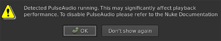

由于检索音频样本时的延迟，Linux 发行版上的 PulseAudio 与波动的帧速率相关联。如果 Nuke 工作室 检测到您的安装程序正在应用程序旁边运行 PulseAudio，将显示警告消息。

您可以为计算机上的当前用户或所有用户禁用 PulseAudio。要停止守护进程，请执行以下操作:
注意: 当您重新启动计算机时，PulseAudio 会自动重新启动，但您可以通过导航到 系统 > 偏好 > 启动应用程序 并禁用 PulseAudio 音响系统。
| 1。 | 打开 ~/。Pulse/client.conf 文件为当前用户禁用 PulseAudio, |
OR
打开 /Etc/pulse/client.conf 文件为所有用户禁用 PulseAudio。
| 2. | 设置以下属性并确保该行没有被注释掉: |
Autospawn = 否
| 3. | 呼叫 脉冲音频 -- 杀死 结束 PulseAudio 过程。 |
| 4. | 呼叫 Ps-e | grep 脉冲 检查进程是否正确停止。 |
注意: 在其他应用程序运行时结束 PulseAudio 可能会禁用音频输出。停止并启动应用程序以重新启用音频输出。此外，桌面音频滑块可能会被删除。
要启动 PulseAudio 守护进程，请执行以下操作:
| 1。 | 打开 ~/。Pulse/client.conf 文件为当前用户启用 PulseAudio, |
OR
打开 /Etc/pulse/client.conf 文件为所有用户启用 PulseAudio。
| 2. | Set the following attribute and ensure the line is not commented out: |
Autospawn = 是
| 3. | 呼叫 Pulseaudio -- 开始 启动 PulseAudio 守护进程。 |
| 4. | 呼叫 Ps-e | grep 脉冲 检查过程是否正确启动。 |
|
|